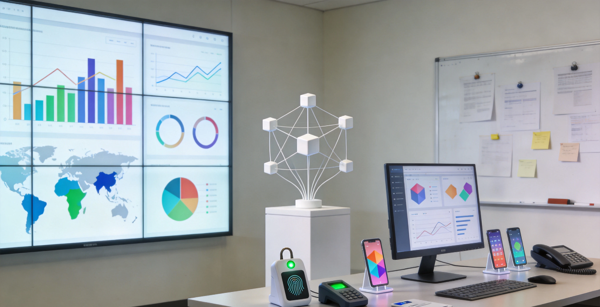
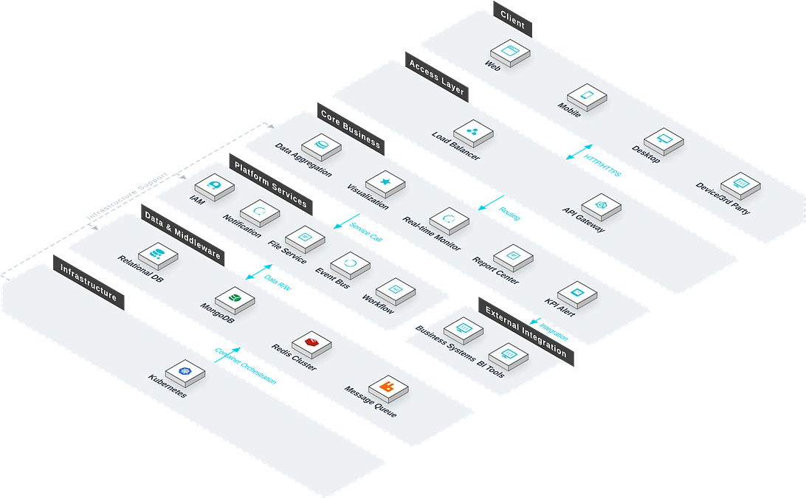

The Dashboard System aggregates multi-source business data into intuitive visual charts. Addressing the pain points of scattered enterprise data and traditional reports failing to present key metrics and business trends in real time, the system delivers multi-source data integration, rich charts, real-time refresh, and drag-and-drop layout, transforming complex data into intuitive management views. Supporting command centre and multi-scenario applications, it helps enterprises achieve data-driven decisions, improve operational transparency, and accelerate response.

Key Features
The system covers six core modules: data integration, rich charts, real-time refresh, drag-and-drop layout, permission control, and multi-terminal display.
Data Integration
Standardised connectors aggregate seven heterogeneous data sources: databases, APIs, Excel/CSV, IoT, ERP, MES, and WMS.
Rich Charts
Built-in chart rendering engine and map engine support line, bar, pie, gauge, and geographic heatmaps.
Real-Time Refresh
SignalR real-time push engine instantly refreshes dashboards on data change.
Drag-and-Drop Layout
No-code drag-and-drop layout engine lets users freely adjust chart position, size, and hierarchy.
Permission Control
Page-level and data-level fine-grained permission control.
Multi-Terminal Display
Large-screen adaptation engine automatically fits terminal displays, pan-PCs, tablets, and mobile phones.
System Architecture
System Architecture

The system adopts a data-integration plus visualisation rendering architecture: standardised connectors aggregate multi-source data; SignalR real-time push engine instantly refreshes on data change; large-screen adaptation engine fits multiple terminals; supports command-centre large screens, PC management cockpits, and mobile data viewing.
Application Scenarios
Suitable for command-centre large screens, real-time business metric monitoring, multi-source data integration analysis, and role-based visual dashboards.
Command-Centre Large Screen
Aggregating multi-source business data into intuitive visual charts, fitted for command-centre large screens for data-driven decision-making.
Real-Time Metric Monitoring
SignalR real-time push engine instantly refreshes dashboards on data change, with key metrics at a glance.
Multi-Source Data Integration
Unified aggregation of databases, APIs, Excel/CSV, IoT, ERP, MES, WMS — breaking data silos.
Role-Based Dashboards
Page-level and data-level fine-grained permission control, with different roles viewing different dashboards.
Advantages & Guarantee
No-code Drag-and-drop Layout
Equipped with a no-code drag-and-drop layout engine, business personnel can freely adjust the position, size, and layer of charts, with zero threshold for dashboard construction.
Real-time Data Refresh
Based on the SignalR real-time push engine, data changes are instantly refreshed to the dashboard, ensuring that decision-making information is always up to date.
Multi-terminal Adaptation
The large-screen adaptation engine automatically adapts to the resolutions of multiple terminals such as consoles, PCs, tablets, and mobile phones, so that the content of one screen can be used everywhere.
Fine-grained Permissions
Provides dual fine-grained permission control at the page level and data level, allowing different roles to view different data, which is safe and controllable.
Multi-data Source Access
Supports docking with various types of data sources such as ERP, project management, and IoT, and aggregates indicator data with a unified caliber.
Flexible Alarm Rules
Supports setting automatic alarms based on thresholds, trends, and year-on-year/quarter-on-quarter comparisons, and abnormal indicators are notified to the responsible person at the first time.
Requirement Research
Gain in-depth understanding of the enterprise's data visualization requirements and current data source status, and sort out core KPIs and dashboard usage scenarios.
System Deployment
Supports local deployment and cloud deployment, adapting to data display requirements and network environments of different scales.
Training and Launch
Provides tiered training for administrators and business personnel, covering dashboard construction, data configuration, permission management, and daily operations.
Continuous Operation and Maintenance
7×24 hour remote technical support, regular system inspections and feature iterations, and continuous guarantee of the stability of data source connections.
Data Security
Dashboard data is stored and transmitted encrypted, with hierarchical permission control and full recording of operation logs, supporting compliance audits.
Upgrade and Expansion
Supports flexible access to new chart components and new data source types, and expands visualization capabilities according to enterprise requirements.